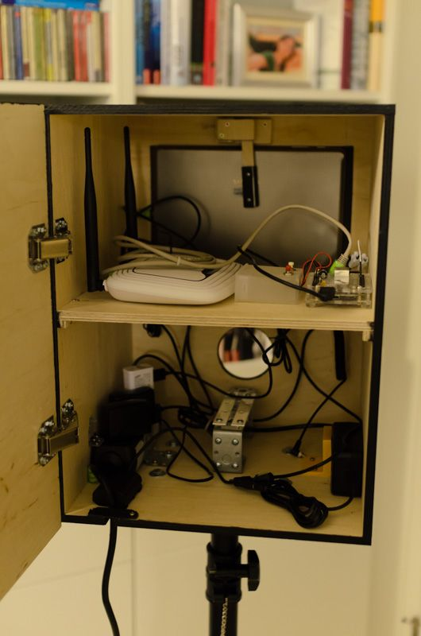
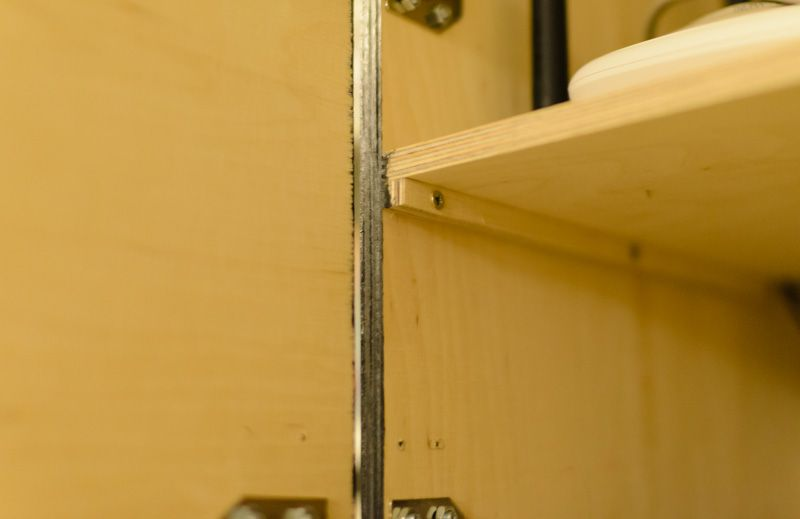
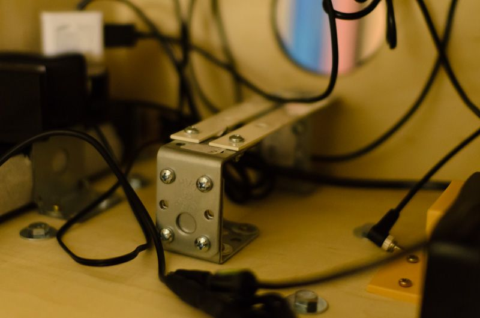
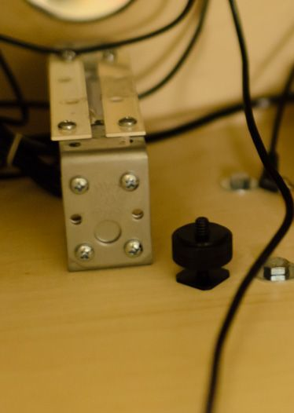
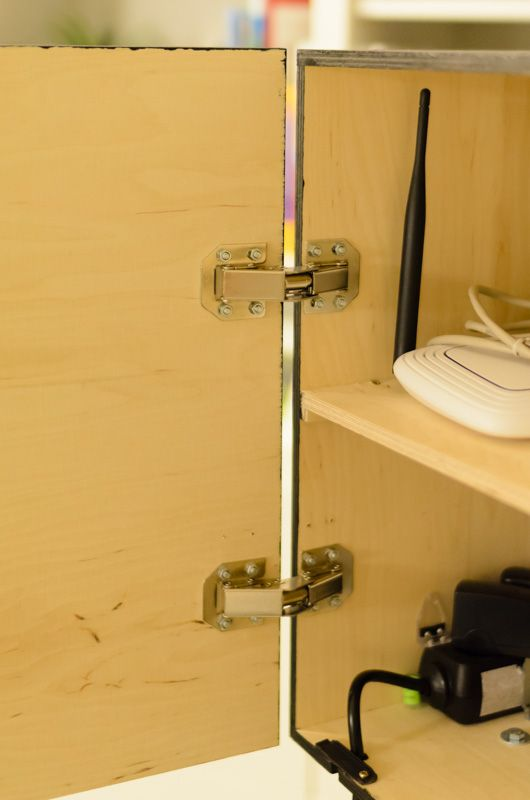

Embo
Embedded Photo Booth
Project maintained by andreasbaak Hosted on GitHub Pages — Theme by mattgraham
Embo
Embedded Photo Booth (Embo) enables you to build your own photobooth from scratch. To this end, we give detailed instructions in both hardware and software setup. In particular, we provide an open source implementation of a sophisticated photobooth software within this github project. The software was designed with the goal of a highly efficient, zero maintenance operation mode.
Embo features a photobooth containing
- A DSLR camera with a prime lense for optimal picture quality
- A 10 inch high resolution tablet that serves as a display for an awesome preview experience
- A WiFi router to enable your guests to view the up-to-date photo gallery on their smartphones or tablets
- An embedded platform (e.g., Beaglebone Black) running a custom yocto-based Linux operating system that hosts the Embo software
The Embo is triggered wirelessly using a remote control for the camera.
In order to achieve high quality pictures, we suggest (and instruct you) to use a background canvas and an indirect flash (for example, a reflective umbrella or a large softbox). We usually use a white background canvas and flash it from behind in order to remove shadows and other imperfections of the canvas.
Embo - Internal Technical Design

Our internal technical design is build with three main ideas in mind. Firstly, taking a picture should be as extremely easy for the user. Secondly, the picture should be displayed as fast as possible. And finally, the system should be stable as to ensure zero-maintenance during your social event.
In order to remotely trigger the camera, we use standard off-the-shelf wireless camera triggers that connect the user, the DSLR camera and all flashes required to light the scene. Taking a picture simply requires you to press the button on the remote. Pressing the button instruments the camera to autofocus on the scene before shooting. Depending on the camera, the lens and the scene, this can lead to a slight delay between the button press and the shot of the camera. Therefore, the remotes allow you to first half-press the button in order to autofocus the scene. Then, a full press can be used to instantaneously take a picture, giving you full precise control over the timing of the picture.
We use an embedded platform (Beaglebone Black) to grab the image from the camera. To this end, we connect the platform to the DSLR camera via an USB cable. The platform runs our Embo software that internally uses the gphoto2 Linux library for grabbing the image from the camera.
In addition to the USB connection from the camera to the platform, we use a connection from the wireless flash trigger to the GPIO ports of the platform. This enables us to instantaneously react on the event of taking a picture and to let Embo display a "please wait" screen before the actual image is downloaded from the camera. The connection uses the pc-sync output of the wireless flash trigger.
The platform is connected to a wireless router using an Ethernet cable. The router spans a wireless network that the tablet computer connects to. This way, the tablet computer can wirelessly access and display the picture that has just been taken. The wireless network is also used in order to let your guests access the current photo gallery using their personal devices.
Finally, we have got additional buttons that are connected to the GPIO ports of the platform. These buttons can be used to trigger special functions. At the moment, Embo allows you to two special functions:
- Reset the photobooth. This delete all pictures in the gallery and reset Embo to show the default front page picture. The reset function is extremely useful for resetting the photobooth after the initial set-up of the photobooth, the canvas and the lighting have been completed. Note that we do not delete the pictures from the SD-card of the camera in order to avoid accidental data loss.
- Delete the previously taken picture. This function is useful if guests take an embarrassing picture which they want to remove from the gallery of pictures.
Embo - Box Assembly
As you can see, there is quite a bit of hardware involved. You have to hide this hardware from the Embo users. To this end, you need to build a container that hosts the camera, the screen (i.e., the tablet copmuter), the wifi router and the embedded board. In order to get a rough impression of the container that you will build, you can download the corresponding SketchUp model here: Photobooth-Sketch.skp

When it's build, Embo looks like this from the outside:

I used medium-density fiberboard (MDF) wood, 9mm thick, in order build the box. Simple woodscrews are used to affix the boards. Make sure that you pre-drill all holes before you affix the screws in order to avoid splicing the wood. Also, I suggest to countersink the screws in order to avoid that the screw-heads stand out. After the box was build, I painted it with acrylic paint. I diluted the paint with water in order to create a paint that lets you see the vein of the wood of the MDF fiberboard.
STOP! Don't assemble everything yet! It is important to first build up most of the internals of the box (e.g., the support for the camera, the support for the tablet, ..., see below) before assembling the box. Otherwise, you won't have enough space to finish the internals.
Embo - Internal Structure of the Box
 This is how Embo looks like internally. On the upper board, we see the wireless router, the embedded platform and an additional panel hosting two buttons. Behind, we can see the tabled computer that is fixed with a lever. On the bottom, we have space for all the poser supplies and - of course - a bracket that can hold the camera. In the following, we tell a bit more about how we build up the internal structure.
Center board
 The material of the center board is also 9mm MDF wood. In order to fix the board in the box, we first fix a thin horizontal bar to the left and the right sidewall. After lying the center board on top of it, we fix the center board with screws from above.
Support for the camera
  The camera needs to be fixed thoroughly since it carries a certain weight. Also, we need to be able to easily attach and detach the camera from the box. Our solution uses four metal squares (two on the front side and two on the back side) and two metal bars. We first fix two of the squares to one another so that we have a U-shaped metal structure. Do the same with the other two metal squares. The two U-shapes are then fixed on the bottom of the box. Finally, the two metal strips are fixed on top of the squares so that they form a rail. The camera is fixed on the rail by means of a standard tripod screw. Therefore, the rails must leave just enough space in between for a tripod screw to fit in.
The construction with the rail has got two important advantages. Firstly, you can vary the position of the camera depending on the length of your lens. Secondly, while fixing the camera, we can slide it forwards so that the front of your lens aligns with the front of your box.
Door hinge
 We use standard hinges to fix the door. Personally, I like hinges that let the door snap shut so that you do not need any additional mechanism to keep the door shut.
Support for the tablet computer
Fixing the tablet is one critical step. The tablet must not be scratched and needs to survive people touching the screen. Therefore, you exercise this step with care.

 We need a support for the bottom of the tablet. Therefore, we build a rail from remainders of the MDF wood.
The rail needs to be thick enough to give enough space for the thickness of your tablet. Note that we apply sponge rubber to all contact points of the tablet computer with the MDF wood in order to avoid scratches!
We need a support for the bottom of the tablet. Therefore, we build a rail from remainders of the MDF wood.
The rail needs to be thick enough to give enough space for the thickness of your tablet. Note that we apply sponge rubber to all contact points of the tablet computer with the MDF wood in order to avoid scratches!
The cut-out that you can see on the first picture was required to give enough space for the wireless trigger that is attached to the top of the camera.
 To fix the tablet on the sides, we use a simple side delimiter made of -- guess what --- 9mm MDF wood.
To fix the tablet on the sides, we use a simple side delimiter made of -- guess what --- 9mm MDF wood.

 The lever that fixes the tablet computer is made of three layers of MDF wood. The base layer (in the back), a support layer and a top layer. The lever is fixed with a simple hinge made of a conter-sinked screw on the back layer. The top layer is used to give additional stability for the lever. The lever can be moved to the top in order to release the tablet. Of course, also the lever is covered with sponge rubber to avoid scratches on the tablet computer.
The lever that fixes the tablet computer is made of three layers of MDF wood. The base layer (in the back), a support layer and a top layer. The lever is fixed with a simple hinge made of a conter-sinked screw on the back layer. The top layer is used to give additional stability for the lever. The lever can be moved to the top in order to release the tablet. Of course, also the lever is covered with sponge rubber to avoid scratches on the tablet computer.